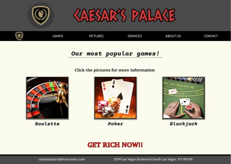

P2 - Project Design
Kristian Myklebust, Steffen Rivedal Eimhjellen, Daniel Kristoffersen,
Ferdinand Henrik Gjesdahl, Jonathan Løvdal and Johan Otto Munkeby
06.10.2022
Administrative details
Client: Caesars Palace casino, represented by Lance Armstrong
Website name: Caesars Palace
Contact person: Johan Otto Munkeby
Purpose, Goals and Audience
The purpose of the website is to draw in and gain customers for the Caesars Palace and
its casino, and furthermore to help Caesars palace make money and a larger profit.
The site will accomplish this by providing visitors with useful information, such as contact
info and descriptions of the hotel/casino and its services. The users will also be able to enroll
to different tournaments and games such as Texas Hold'em poker, Blackjack, Dice and Roulette.
The main goal will be to show all the different opportunities to the customers, and provide knowlegde
on the different games and services available.
The intended audience is everyone of legal age who fancies a little bit of gambling,
although the more typical user might just be the middle-aged man with a bit too much
time on their hands. They are going to need a user-friendly and tidy website that allows
them to go about their business in the most calm and worry-free manner possible. We will
make gambling appealing and profitable to the common user, which will ensure large profits
for the casino and mr. Armstrong himself.
Navigation Structure

Figure 1: The navigation structure of the webpage, with clickable pathways illustrated
The navigation bar will be visible at the top of the page on every page of the website, with in
total 6 clickable links. This will be the main navigation tool. In addition to this, a few of
the links will also reveal a drop-down menu when hovered upon. With this, all the different pages
will be linked to each other and can be reached with just one click, no matter what page you’re at.
For the homepage we will include a Caesars logo in the navbar that will work as the link to the homepage.
The reason we chose this navigation structure is because it gives the user complete freedom to navigate
wherever they want. It is also a very basic and user-friendly structure.
Page Layout and Appearance
In coming up with the general design for the website we made sure the Caesars Palace
brand is easy to see and that the rest of the website is easy to navigate and understand
for the users. We have therefore focused on making a universal design that is simple and
clean, with a navigation bar the user can look at and immediately find what they are looking for.
The navigation bar will cover every topic the target audience will be interested in about the
Caesars casino. The games tab will be the most useful for everyone looking for information about
the games at Caesars Palace.
Styling that will apply to all the pages:
Font:
Castellar for the main title (35pt) and navigation bar (20pt)
and for body Helvetica(sans-serif) (15pt)
Color Scheme:
Text: Black.
Background: Light brown RGB(245, 230, 209)
Links: Swap background color of the boxes on navbar when clicked. Should be silver gray, RGB(192,192,192)
Body width:
100% of browser window
Links:
The logo, and all of the boxes in the navbar should be clickable, and redirect the user to their respective sites.
Logo should redirect to the homepage.
Navbar position and apperance:
The navbar will be fixed to the topp off the screen. when the user hover over the tabs they will increase in size
and get light grey shadows.
Banner:
The banner will have “Cesars Palace” written in Castellar as seen on the mockup picture.
Footer:
Email adress | telephone number
Logo:
Our Logo will be in the upper left corner next to the banner and menu tabs and will be the ceasars palace logo.
Content
There will be six different pages the user can access, and they will be the following:
-
Homepage-homepage.html
-
The user will be welcomed by the home page, obviously.The goal of this page is to welcome the user
and give a simple description of Caesar’s palace and the website. Therefore there will not be a lot
of content on the home page, because we do not want to overwhelm the user.
-
At the top of the page Caesar’s logo along with the navigation bar will show. The navbar will as mentioned
be fixed to the top of the screen.
-
Below the top section, the page will be dominated by a full scale picture of Ceasar’s palace, with the text
“Welcome to Caesar’s palace” along with the mantra “Unleash your Caesar”, centered on top of the picture.
-
Below the picture there will be a simple yet fulfilling description of Caesar’s palace and what we have to offer.
Figure 2: A brief overview of the design of the homepage
-
About-about.html
The about page will be a short paragraph about the history of ceasars palace and Las Vegas. The page will simillarly
to the homepage be about building the ceasars palace brand and will therefore have three pictures from inside the
casino 250px by 250px. Under the pictures there will be some interviews from clientel at the casino.
Figure 3: The design of the about page
-
Games-games.html
-
The user will be welcomed to this page by the first game, which will be blackjack. The other games we will have on
this page are poker and roulette.
-
We decided not to actually code the games on our game page, so the goal of this page will only be to achieve the
objective of making people interested, and increase their desire to go and spend their money at the casino.
The user will be seeing pictures of the games, and also the different rules of the games. There will also be
provided a link, that would have taken the user to a new page where the user could have actually been able to
play the different games that we listed.

Figure 4: The different games provided and the design
-
Pictures-pictures.html
The picture.html page should be a relatively simple site including a gallery of all the pictures that Caesar’s
palace has taken during the years. With some information about the event’s that are photographed. The page should
also include a slideshow, which we will make in javascript. This slideshow should continue to swap pictures every
10 seconds, or when the user clicks on the next or previous button, which will move them onto the next picture or
go back to the previous picture. The buttons will be on the left and right side of the pictures, where previous is
to the left and next is to the right. As mentioned the pictures should also have a little text underneath,
mentioning what happened, where it was taken and with who.
Figure 5:The picture slideshow and the design chosen for this feature
-
Contact-contact.html
The contact page will include an FAQ with commonly asked questions and answers in a list format.
After the FAQ there will be a form for contacting Caesars palace customer support where the user will
be able to submit their name, email address, phone number and the request the user has.
Figure 6: The contact page with form where the user can fill out a request
-
Services-services.html
The service page will show the many different services that ceasars palace is able to provide for its high paying
customers. The main goal of this page is to appeal to people's innate desire to live a carefree, luxurious and
relaxing life for a few days.
The services that is going to be shown at the page will be:
-
Hotel
-
Casino
-
Restaurants
-
Nightlife
-
Currency calculator

Figure 7: The different services that the Casino provide, along with a currency calculator
Minimum Requirements
Our plan to fulfill the javascript requirements is:
-
A drop down menu that will be provided on every page that allows easy access to the other pages on the site.
-
A slideshow of pictures that will show off everything that Caesar's Palace has to offer to the target audience.
-
A currency calculator that will allow the user to calculate between euro, nok, dollar, pound and yuan.
-
Image pop ups that will allow the user to hover over a selected game to display a larger version of the picture
along with a description of the game.
The contact page includes a form for clientel to contact customer service so we hope to add a javascript for this form.
File structure:
- homepage.html
- about.html
- games.html
- pictures.html
- services.html
- contact.html
- images/
- background_img.png
- backgroung_border.png
- headerLogo.png
- picture_1.png
- picture_2.png
- ....png
- picture_30.png
- modularity/
- menu.part
- (mabye more files here)
- scripts/
- dropDownMenu.js
- slideShow.js
- currencyCalculator.js
- imageSize.js
- styling.css
Plan:
We will follow the scheme represented in table 1 to make sure the different tasks are compleated in time
and to have a clear overview of who is responsible for what. The different files have been delegated
in a fair manner.
| File |
Description |
In charge |
Due date |
| homepage.html |
Homepage |
Kristian |
20th October |
| about.html |
A short summary of Caesars Palace and Las Vegas history |
Jonathan |
27th October |
| games.html |
Information of some off the games available at Caesars |
Ferdinand |
27th October |
| services.html |
Overview of what Caesars has to offer, links to hotel pages, casino, restaurants etc. |
Steffen |
27th October |
| contact.html |
Information about how to contact the hotel. Interactive e-mail system |
Daniel |
27th October |
| pictures.html |
Visual representations through pictures. includes a carusel that shift picture
every 10 seconds
|
Johan |
27th October |
| menu.part |
The menu bar interaction |
Ferdinand |
3rd November |
| dropDownMenu.js |
Javascript for drop-down menu when hovered upon. |
Daniel |
3rd November |
| slideShow.js |
The pictures will be a slideshow with navigator arrows |
Steffen |
3rd November |
| currencyCalc.js |
Currency calculator with NOK, USD, EUR, GBP and CNY |
Jonathan |
3rd November |
| imageSize.js |
When hovered over, the image increases in size and pops up with a description of the game presented in the picture |
Kristian |
3rd November |
| styling.css |
All styling for the html files |
All |
3rd November |
| Final Controls and tests |
Final testing and error checking for all files |
All |
14th November |
Table 1:The table provides a detailed plan for when, who and where the different requirements will be compleated